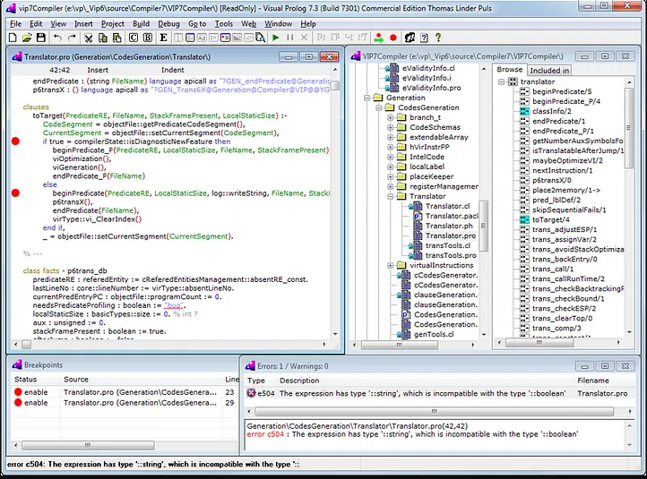

Prolog (1973)
Prolog (Programming in Logic), é uma linguagem de programação baseada em lógica formal, desenvolvida por Alain Colmerauer e Philippe Roussel na década de 1970. Ela se baseia no cálculo de predicados da lógica matemática e é amplamente utilizada em inteligência artificial, processamento de linguagem natural, sistemas especialistas e programação de lógica dedutiva.
Ela se diferencia das linguagens de programação convencionais, pois utiliza a programação lógica como paradigma principal. Em vez de instruir o computador a executar uma sequência de comandos, no Prolog, você define um conjunto de fatos e regras lógicas que descrevem um problema e permite que o sistema de Prolog inferira as respostas com base nessas regras.
O Prolog é amplamente utilizado em áreas como processamento de linguagem natural, sistemas especialistas, análise de dados, modelagem de problemas complexos e inteligência artificial. Sua abordagem lógica e declarativa oferece uma maneira única de resolver problemas complexos e lidar com raciocínio lógico.
Atividade desenvolvida como extensão no projeto
PACEX/Mundo Tech do curso de análise e Desenvolvimento de Sistemas
Unipar - Cascavel